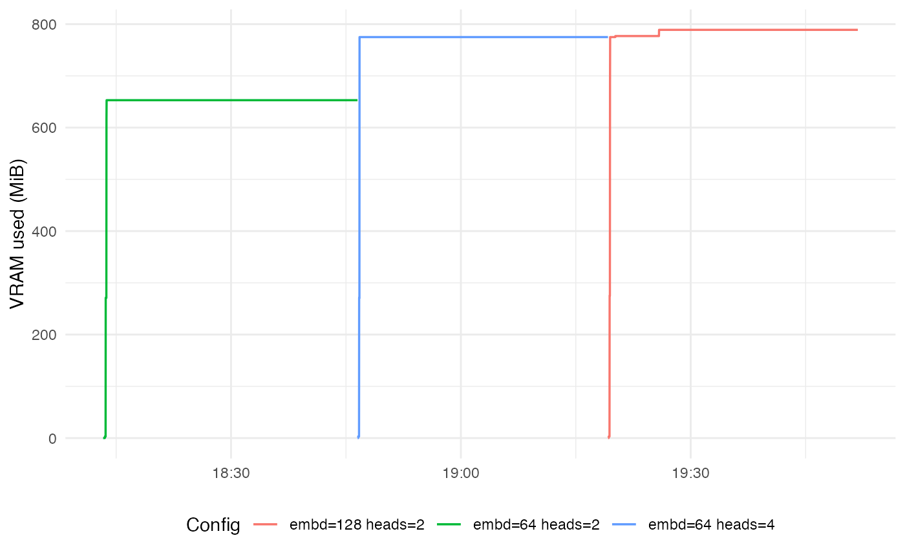
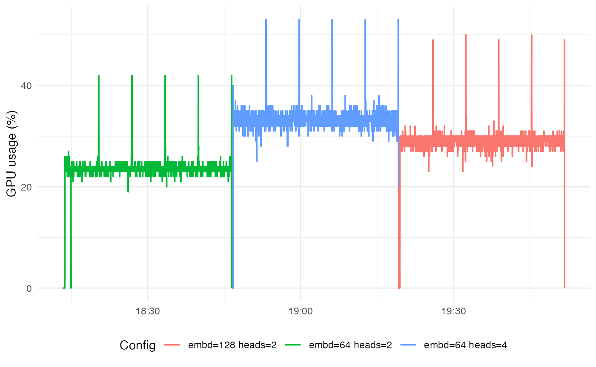

vignettes/resourceUse.Rmd
resourceUse.RmdThe nvidia-smi utility can record aspects of GPU utilization. We have used
nvidia-smi --query-gpu=timestamp,\
utilization.gpu,\
utilization.memory,\
memory.used,memory.free,memory.total,\
power.draw,temperature.gpu --format=csv --loop=1 > gpu_trace.csv &to collect data from an example run. One kills the associated process when the run completes.
The data from a test run with 5000 patients (average 1600 events per patient, model has 4 heads, embedding dimension 128) are plotted in an elementary way:
par(mar=c(4,3,2,2))
library(exploreCEHR)
example(plot_trace, ask=FALSE)##
## plt_tr> plot_trace(demotrace_path())An illustration of usage as we explore different numbers of heads and embedding sizes has been obtained. Here the number of patients is 10000 with mean number of events per patient 1800.
GPU memory consumption:
library(ggplot2)
source(system.file("performance", "merge.R", package="exploreCEHR"))## # A tibble: 3 × 5
## config peak_mem_mib mean_gpu_util mean_power_w duration_s
## <chr> <dbl> <dbl> <dbl> <dbl>
## 1 embd=128 heads=2 789 28.9 118. 1956.
## 2 embd=64 heads=2 653 23.3 111. 1992.
## 3 embd=64 heads=4 775 33.2 130. 1961.
vramplot
GPU fractional utilization:
utilplot